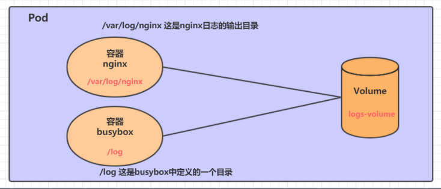
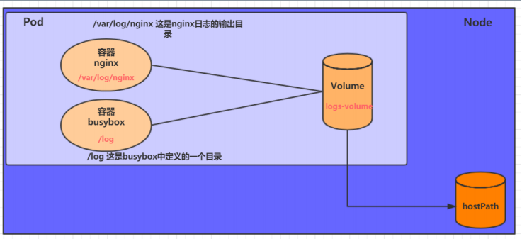
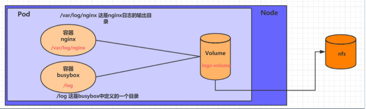
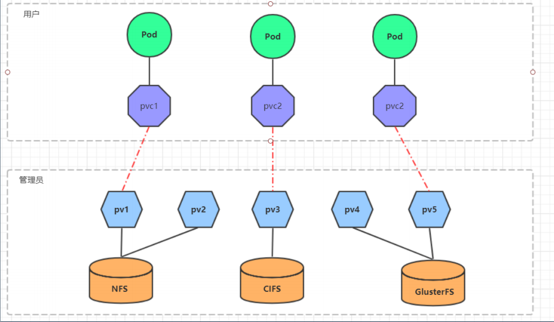
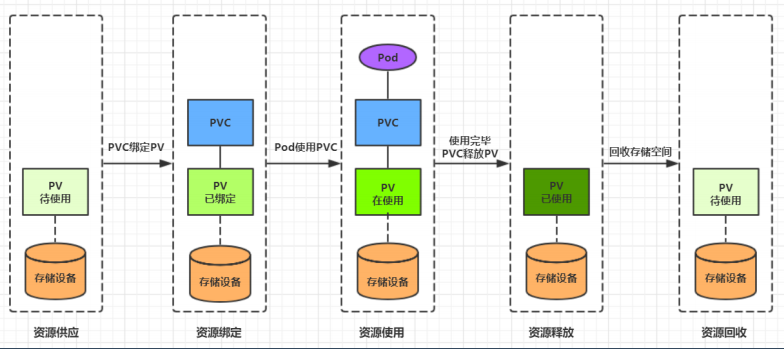

Kubernetes-数据存储
Volume 是 Pod
中能够被多个容器访问的共享目录 ，它被定义在 Pod
上 ，然后被一个 Pod
里的多个容器挂载到具体的文件目录下 ，kubernetes 通过 Volume
实现同一个 Pod
中不同容器之间的数据共享以及数据的持久化存储 。Volume
的生命容器不与 Pod
中单个容器的生命周期相关 ，当容器终止或者重启时，Volume
中的数据也不会丢失。
kubernetes 的 Volume 支持多种类型，比较常见的有下面几个：
基本存储
EmptyDir
EmptyDir 是最基础的 Volume 类型，一个 EmptyDir 就是 Host
上的一个空目录。
EmptyDir 是在 Pod 被分配到 Node
时创建的 ，它的初始内容为空，并且无须指定宿主机上对应的目录文件，因为
kubernetes 会自动分配一个目录，当 Pod 销毁时， EmptyDir
中的数据也会被永久删除 。
EmptyDir 用途如下：
在一个Pod中准备两个容器 nginx 和 busybox，然后声明一个 Volume
分别挂在到两个容器的目录中，然后 nginx 容器负责向 Volume
中写日志，busybox 中通过命令将日志内容读到控制台。

1 2 3 4 5 6 7 8 9 10 11 12 13 14 15 16 17 18 19 20 21 22 23 24 25 apiVersion: v1 kind: Pod metadata: name: volume-emptydir namespace: dev spec: containers: - name: nginx image: nginx:1.14-alpine ports: - containerPort: 80 volumeMounts: - name: logs-volume mountPath: /var/log/nginx - name: busybox image: busybox:1.30 command: ["/bin/sh" ,"-c" ,"tail -f /logs/access.log" ] volumeMounts: - name: logs-volume mountPath: /logs volumes: - name: logs-volume emptyDir: {}
HostPath
EmptyDir 中数据不会被持久化，它会随着 Pod
的结束而销毁，如果想简单的将数据持久化到主机中，可以选择HostPath 。
HostPath 就是将 Node 主机中一个实际目录挂在到 Pod
中，以供容器使用 ，这样的设计就可以保证 Pod
销毁了，但是数据依据可以存在于 Node 主机上。

1 2 3 4 5 6 7 8 9 10 11 12 13 14 15 16 17 18 19 20 21 22 23 24 25 26 27 28 29 30 31 32 33 34 35 36 37 apiVersion: v1 kind: Pod metadata: name: volume-hostpath namespace: dev spec: containers: - name: nginx image: nginx:1.17.1 ports: - containerPort: 80 volumeMounts: - name: logs-volume mountPath: /var/log/nginx - name: busybox image: busybox:1.30 command: ["/bin/sh" ,"-c" ,"tail -f /logs/access.log" ] volumeMounts: - name: logs-volume mountPath: /logs volumes: - name: logs-volume hostPath: path: /root/logs type: DirectoryOrCreate 关于type的值的一点说明： DirectoryOrCreate 目录存在就使用，不存在就先创建后使用 Directory 目录必须存在 FileOrCreate 文件存在就使用，不存在就先创建后使用 File 文件必须存在 Socket unix套接字必须存在 CharDevice 字符设备必须存在 BlockDevice 块设备必须存在
NFS
HostPath 可以解决数据持久化的问题，但是一旦 Node
节点故障了，Pod
如果转移到了别的节点，又会出现问题了 ，此时需要准备单独的网络存储系统，比较常用的用NFS、CIFS 。
NFS 是一个网络文件存储系统，可以搭建一台 NFS
服务器 ，然后将 Pod 中的存储直接连接到 NFS
系统上，这样的话，无论 Pod 在节点上怎么转移，只要 Node 跟 NFS
的对接没问题，数据就可以成功访问。

1 2 3 4 5 6 7 8 9 10 11 12 13 14 15 16 17 18 19 20 21 22 23 24 25 26 27 apiVersion: v1 kind: Pod metadata: name: volume-nfs namespace: dev spec: containers: - name: nginx image: nginx:1.17.1 ports: - containerPort: 80 volumeMounts: - name: logs-volume mountPath: /var/log/nginx - name: busybox image: busybox:1.30 command: ["/bin/sh" ,"-c" ,"tail -f /logs/access.log" ] volumeMounts: - name: logs-volume mountPath: /logs volumes: - name: logs-volume nfs: server: 192.168 .109 .100 path: /root/data/nfs
高级存储
为了能够屏蔽底层存储实现的细节，方便用户使用， kubernetes 引入 PV 和
PVC 两种资源对象。
PV（Persistent
Volume）是持久化卷的意思，是对底层的共享存储的一种抽象 。一般情况下PV由
kubernetes
管理员进行创建和配置，它与底层具体的共享存储技术有关，并通过插件完成与共享存储的对接。
PVC（Persistent Volume
Claim）是持久卷声明的意思 ，是用户对于存储需求的一种声明 。换句话说，PVC
其实就是用户向 kubernetes 系统发出的一种资源需求申请。

PV
1 2 3 4 5 6 7 8 9 10 11 apiVersion: v1 kind: PersistentVolume metadata: name: pv2 spec: nfs: capacity: storage: 2Gi accessModes: storageClassName: persistentVolumeReclaimPolicy:
PV 相关的配置参数如下
存储类型 ：底层实际存储的类型，kubernetes
支持多种存储类型，每种存储类型的配置都有所差异
存储能力（capacity） ：目前只支持存储空间的设置(
storage=1Gi )，不过未来可能会加入IOPS、吞吐量等指标的配置
访问模式（accessModes） ：用于描述用户应用对存储资源的访问权限，访问权限包括下面几种方式：
ReadWriteOnce（RWO）：读写权限，但是只能被单个节点挂载
ReadOnlyMany（ROX）： 只读权限，可以被多个节点挂载
ReadWriteMany（RWX）：读写权限，可以被多个节点挂载
回收策略（persistentVolumeReclaimPolicy） ：当PV不再被使用了之后，对其的处理方式。目前支持三种策略：
Retain （保留） 保留数据，需要管理员手工清理数据
Recycle（回收） 清除 PV 中的数据，效果相当于执行 rm -rf
/thevolume/*
Delete （删除） 与 PV 相连的后端存储完成 volume
的删除操作，当然这常见于云服务商的存储服务
存储类别 ：PV可以通过 storageClassName
参数指定一个存储类别
状态 ：一个 PV
的生命周期中，可能会处于4中不同的阶段：
Available（可用）： 表示可用状态，还未被任何 PVC 绑定
Bound（已绑定）： 表示 PV 已经被 PVC 绑定
Released（已释放）： 表示 PVC
被删除，但是资源还未被集群重新声明
Failed（失败）： 表示该 PV 的自动回收失败
PVC
1 2 3 4 5 6 7 8 9 10 11 12 apiVersion: v1 kind: PersistentVolumeClaim metadata: name: pvc namespace: dev spec: accessModes: selector: storageClassName: resources: requests: storage: 5Gi
访问模式（accessModes） ：用于描述用户应用对存储资源的访问权限
选择条件（selector） ：通过 Label Selector
的设置，可使 PVC 对于系统中己存在的 PV 进行筛选
存储类别（storageClassName） ：PVC
在定义时可以设定需要的后端存储的类别，只有设置了该 class 的 pv
才能被系统选出
资源请求（Resources
） ：描述对存储资源的请求
生命周期

配置存储
ConfigMap
ConfigMap
是一种比较特殊的存储卷，它的主要作用是用来存储配置信息的
1 2 3 4 5 6 7 8 9 apiVersion: v1 kind: ConfigMap metadata: name: configmap namespace: dev data: info: | username:admin password:123456
准备一个 Pod 挂载即可
1 2 3 4 5 6 7 8 9 10 11 12 13 14 15 16 17 18 apiVersion: v1 kind: Pod metadata: name: pod-configmap namespace: dev spec: containers: - name: nginx image: nginx:1.17.1 volumeMounts: - name: config mountPath: /configmap/config volumes: - name: config configMap: name: configmap
1 2 3 4 5 6 7 8 9 10 11 12 13 14 15 16 17 18 19 20 21 [root@master ~]# kubectl create -f pod-configmap.yaml pod/pod-configmap created [root@master ~]# kubectl get pod pod-configmap -n dev NAME READY STATUS RESTARTS AGE pod-configmap 1/1 Running 0 6s [root@master ~]# kubectl exec -it pod-configmap -n dev /bin/sh info username:admin password:123456
Secret
在 kubernetes 中，还存在一种和 ConfigMap 非常类似的对象，称为 Secret
对象。它主要用于存储敏感信息，例如密码、秘钥、证书等等。
提前使用好编码 （base64），然后填在 yaml 文件中，然后
create 即可
1 2 3 4 5 6 7 8 9 apiVersion: v1 kind: Secret metadata: name: secret namespace: dev type: Opaque data: username: YWRtaW4= password: MTIzNDU2
创建 Pod 挂载它
1 2 3 4 5 6 7 8 9 10 11 12 13 14 15 16 17 apiVersion: v1 kind: Pod metadata: name: pod-secret namespace: dev spec: containers: - name: nginx image: nginx:1.17.1 volumeMounts: - name: config mountPath: /secret/config volumes: - name: config secret: secretName: secret
1 2 3 4 5 6 7 8 9 10 11 12 13 14 15 16 17 18 19 20 [root@master ~]# kubectl create -f pod-secret.yaml pod/pod-secret created [root@master ~]# kubectl get pod pod-secret -n dev NAME READY STATUS RESTARTS AGE pod-secret 1/1 Running 0 2m28s [root@master ~]# kubectl exec -it pod-secret /bin/sh -n dev / password username / admin / 123456